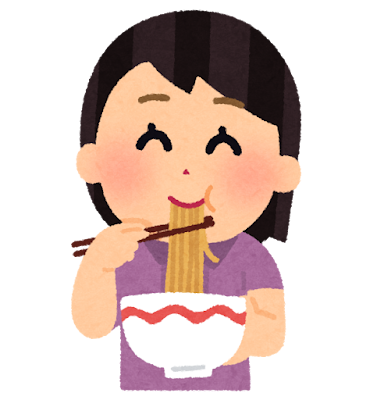

밥머거, 이렇게 쓰세요
점심 모으기부터 정산까지, 슬랙에서 버튼만 누르면 끝나요. 필요할 때 찾아보세요.
채널에 밥머거를 초대해두면 준비 끝 🍚
1. 무슨 명령어를 쓸까요
🛵 /배달
사무실에서 시켜 먹을 때
모일 층을 고르고 사람을 모아요. 한 명이 먼저 결제하고 나중에 정산받는 방식이에요.
🍽️ /외식
나가서 먹을 때
가게 이름이나 주소를 적으면 모집 메시지에 카카오맵 링크가 같이 붙어요. 나머지는 배달과 똑같아요.
🎲 /내기빵
누가 쏠지 정할 때
참가자 중 한 명을 무작위로 뽑아요. 확률은 모두 똑같고, 정산 단계는 아예 없어요.
💳 /계좌등록
미리 한 번만
은행·계좌번호·예금주를 저장해두면, 다음부터 팟을 만들 때 계좌 칸이 자동으로 채워져요.
2. 밥 먹는 순서 (배달 · 외식)
모집중
채널에 모집 메시지가 올라와요. 누구나 참여하거나 빠질 수 있고, 정원이 차면 더 못 들어와요. 파티장은 자동으로 참여자에 들어가요.
누구나 🙋 참여할게요 · 빠질게요
모집 완료
인원이 확정되고 더 이상 참여할 수 없어요. 여기서 정산을 할지, 각자 계산하고 끝낼지 고릅니다.
파티장만 🔒 모집 마감을 눌러 넘어와요
정산 중
파티장이 참여자별 금액과 받을 계좌를 입력하면, 참여자 전원에게 계좌 안내 DM이 자동으로 갑니다. 메뉴가 다르면 사람마다 금액을 다르게 매길 수 있어요.
파티장만 💸 정산 시작
정산 완료
파티장을 뺀 전원이 "입금했어요"를 누르면 자동으로 넘어와요. 잘못 끝났다면 파티장이 다시 열 수도 있어요.
자동 또는 파티장만 ✅ 정산 완료 처리
3. 버튼이 하는 일
채널 메시지에 있는 버튼
정산 DM에 있는 버튼
정산이 시작되면 참여자 각자에게 보낼 금액과 계좌가 DM으로 옵니다.
4. 내기빵은 조금 달라요
내기빵엔 정산이 없어요. 모으고 → 뽑고 → 끝. 시간·계좌 칸도 없습니다.
모집중
뭘 걸고 내기할지(점심·커피·디저트) 고르고 참가자를 모아요.
누구나 🙋 참여할게요
추첨 완료
참가자 중 한 명이 무작위로 뽑혀 메시지에 당첨자로 표시돼요. 한 번 뽑으면 다시 못 돌려요.
파티장만 🎲 추첨하기
5. 메시지에 붙는 상태
앞의 넷은 순서대로 흘러가고, 뒤의 넷은 흐름에서 빠져나온 끝난 상태예요. 뒤로는 돌아갈 수 없어요.
6. 이럴 땐 이렇게
버튼을 눌렀는데 아무 반응이 없어요
파티장 전용 버튼을 다른 사람이 눌렀거나, 봇이 꺼져 있을 때 그래요. 본인에게만 보이는 안내 메시지가 뜨는지 확인해보세요.
모집 메시지가 채널에 안 올라가요
비공개 채널이면 봇을 먼저 초대해야 해요. 채널에서 /invite @밥머거를 입력해주세요.
정산 DM을 못 받았어요
파티장에게 📨 정산 DM 다시 보내기를 눌러달라고 하세요.
제 계좌가 저장되나요?
정산 시작 모달의 체크박스를 켠 경우에만 저장돼요. /계좌등록으로 직접 등록·변경할 수도 있어요. 팟이 끝나고 24시간이 지나면 계좌번호는 자동으로 지워집니다.
사람마다 먹은 게 다른데 금액을 나눠 낼 수 있나요?
네. 정산 시작 모달에서 참여자 한 명 한 명에게 금액을 따로 적을 수 있어요.
실수로 정산을 끝냈어요
파티장이 🔄 정산 다시 열기로 되돌릴 수 있어요. 단 🏁 정산 마무리까지 눌렀다면 되돌릴 수 없습니다.
오늘 점심도 잘 드세요.
— 밥머거 올림 🍜